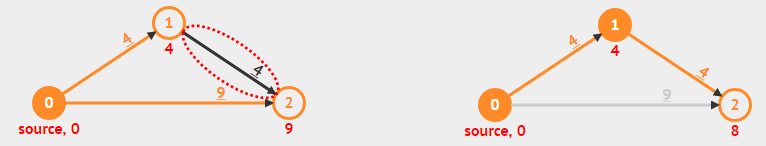

In the Single-Source Shortest Paths (SSSP) problem, we aim to find the shortest paths weights (and the actual paths) from a particular single-source vertex to all other vertices in a directed weighted graph (if such paths exist).
The SSSP problem is a(nother) very well-known Computer Science (CS) problem that every CS students worldwide need to be aware of and hopefully master.
The SSSP problem has several different efficient (polynomial) algorithms (e.g., Bellman-Ford, BFS, DFS, Dijkstra — 2 versions, and/or Dynamic Programming) that can be used depending on the nature of the input directed weighted graph, i.e. weighted/unweighted, with/without (negative weight) cycle, or structurally special (a tree/a DAG).
Remarks: By default, we show e-Lecture Mode for first time (or non logged-in) visitor.
If you are an NUS student and a repeat visitor, please login.
SSSP is one of the most frequent graph problem encountered in real-life. Every time we want to move from one place (usually our current location) to another (our destination), we will try to pick a short — if not the shortest — path.
SSSP algorithm(s) is embedded inside various map software like Google Maps and in various Global Positioning System (GPS) tool.
Pro-tip 1: Since you are not logged-in, you may be a first time visitor (or not an NUS student) who are not aware of the following keyboard shortcuts to navigate this e-Lecture mode: [PageDown]/[PageUp] to go to the next/previous slide, respectively, (and if the drop-down box is highlighted, you can also use [→ or ↓/← or ↑] to do the same),and [Esc] to toggle between this e-Lecture mode and exploration mode.
Input 1: A directed weighted graph G(V, E), not necessarily connected, where V/vertices can be used to describe intersections, junctions, houses, landmarks, etc and E/edges can be used to describe streets, roads, avenues with proper direction and weight/cost.
Input 2: As the name implies, the SSSP problem has another input: A source vertex s ∈ V.
Pro-tip 2: We designed this visualization and this e-Lecture mode to look good on 1366x768 resolution or larger (typical modern laptop resolution in 2021). We recommend using Google Chrome to access VisuAlgo. Go to full screen mode (F11) to enjoy this setup. However, you can use zoom-in (Ctrl +) or zoom-out (Ctrl -) to calibrate this.
The objective of the SSSP problem is to find the shortest path weight from s to each vertex u ∈ V, denoted as δ(s, u) (δ is pronounced as 'delta') and also the actual shortest path from s to u.
The path weight of a path p is simply the summation of edge weights along that path.
The weight of the shortest path from s to s is trivial: 0.
The weight of the shortest path from s to any unreachable vertex is also trivial: +∞.
PS: The weight of the shortest path from s to v where (s, v) ∈ E does not necessarily the weight of w(s, v). See the next few slides to realise this.
Pro-tip 3: Other than using the typical media UI at the bottom of the page, you can also control the animation playback using keyboard shortcuts (in Exploration Mode): Spacebar to play/pause/replay the animation, ←/→ to step the animation backwards/forwards, respectively, and -/+ to decrease/increase the animation speed, respectively.
The outputs of all six (6) SSSP algorithms for the SSSP problem discussed in this visualization are these two arrays/Vectors:
- An array/Vector D of size V (D stands for 'distance')
Initially, D[u] = 0 if u = s; otherwise D[u] = +∞ (a large number, e.g. 109)
D[u] decreases as we find better (shorter) paths
D[u] ≥ δ(s, u) throughout the execution of SSSP algorithm
D[u] = δ(s, u) at the end of SSSP algorithm - An array/Vector p of size V (p stands for 'parent'/'predecessor'/'previous')
p[u] = the predecessor on best path from source s to u
p[u] = NULL (not defined, we can use a value like -1 for this)
This array/Vector p describes the resulting SSSP spanning tree
Initially, D[u] = +∞ (practically, a large value like 109) ∀u ∈ V\{s}, but D[s] = D[0] = 0.
Initially, p[u] = -1 (to say 'no predecessor') ∀u ∈ V.
Now click — don't worry about the details as they will be explained later — and wait until it is over (approximately 10s on this small graph).
At the end of that SSSP algorithm, D[s] = D[0] = 0 (unchanged) and D[u] = δ(s, u) ∀u ∈ V
e.g. D[2] = 6, D[4] = 7 (these values are stored as red text under each vertex).
At the end of that SSSP algorithm, p[s] = p[0] = -1 (the source has no predecessor), but p[v] = the origin of the red edges for the rest, e.g. p[2] = 0, p[4] = 2.
Thus, if we are at s = 0 and want to go to vertex 4, we will use shortest path 0 → 2 → 4 with path weight 7.
Some graphs contain negative weight edge(s) (not necessarily cyclic) and/or negative weight cycle(s). For example (fictional): Suppose you can travel forward in time (normal, edges with positive weight) or back in time by passing through time tunnel (special wormhole edges with negative weight), as the example shown above.
On that graph, the shortest paths from the source vertex s = 0 to vertices {1, 2, 3} are all ill-defined. For example 1 → 2 → 1 is a negative weight cycle as it has negative total path (cycle) weight of 15-42 = -27. Thus we can cycle around that negative weight cycle 0 → 1 → 2 → 1 → 2 → ... forever to get overall ill-defined shortest path weight of -∞.
However, notice that the shortest path from the source vertex s = 0 to vertex 4 is ok with δ(0, 4) = -99. So the presence of negative weight edge(s) is not the main issue. The main issue is the presence of negative weight cycle(s) reachable from source vertex s.
The main operation for all SSSP algorithms discussed in this visualization is the relax(u, v, w(u, v)) operation with the following pseudo-code:
relax(u, v, w_u_v)
if D[v] > D[u]+w_u_v // if the path can be shortened
D[v] = D[u]+w_u_v // we 'relax' this edge
p[v] = u // remember/update the predecessor
// update some other data structure(s) as necessary
For example, see relax(1,2,4) operation on the figure below: 
There are two different sources for specifying an input graph:
- Edit Graph: You can draw, edit, or import any directed weighted graph as the input graph.
- Example Graphs: You can select from the list of our selected example graphs to get you started. These example graphs have different characteristics.
In this visualization, we will discuss 6 (SIX) SSSP algorithms.
We will start with the O(V×E) Bellman-Ford algorithm first as it is the most versatile (but also the slowest) SSSP algorithm. We will then discuss 5 (FIVE) other algorithms (including two variants of Dijkstra's algorithm) that solve special-cases of SSSP problem in a much faster manner.
The general purpose Bellman-Ford algorithm can solve all kinds of valid SSSP problem variants (expect one — the one that is ill-defined anyway, to be discussed soon), albeit with a rather slow O(V×E) running time. It also has an extremely simple pseudo-code:
for i = 1 to |V|-1 // O(V) here, so O(V×E×1) = O(V×E)
for each edge(u, v) ∈ E // O(E) here, e.g. by using an Edge List
relax(u, v, w(u, v)) // O(1) here
Without further ado, let's see a preview of how it works on the example graph above by clicking (≈30s, and for now, please ignore the additional loop at the bottom of the pseudo-code).
Bellman-Ford algorithm can be made to run slightly faster on normal input graph, from the worst case of O(V×E) to just O(k×E) where k is the number of iterations of the outer loop of Bellman-Ford.
Discussion: How to do this? Is the speed-up significant?
The content of this interesting slide (the answer of the usually intriguing discussion point from the earlier slide) is hidden and only available for legitimate CS lecturer worldwide. This mechanism is used in the various flipped classrooms in NUS.
If you are really a CS lecturer (or an IT teacher) (outside of NUS) and are interested to know the answers, please drop an email to stevenhalim at gmail dot com (show your University staff profile/relevant proof to Steven) for Steven to manually activate this CS lecturer-only feature for you.
FAQ: This feature will NOT be given to anyone else who is not a CS lecturer.
To convince the worldwide audience that Bellman-Ford algorithm works, let's temporarily move from visualization mode to proof mode for a few slides.
Theorem 1: If G = (V, E) contains no negative weight cycle, then the shortest path p from source vertex s to a vertex v must be a simple path.
Recall: A simple path is a path p = {v0, v1, v2, ..., vk}, (vi, vi+1) ∈ E, ∀ 0 ≤ i ≤ (k-1) and there is no repeated vertex along this path.
- Suppose the shortest path p is not a simple path
- Then p must contains one (or more) cycle(s) (by definition of non-simple path)
- Suppose there is a cycle c in p with positive weight (e.g., green → blue → green on the left image)

- If we remove c from p, then we will have a shorter 'shortest path' than our shortest path p
- A glaring contradiction, so p must be a simple path
- Even if c is actually a cycle with zero (0) total weight — it is possible according to our Theorem 1 assumption: no negative weight cycle (see the same green → blue → green but on the right image), we can still remove c from p without increasing the shortest path weight of p
- In conclusion, p is a simple path (from point 5) or can always be made into a simple path (from point 6)
In another word, shortest path p has at most |V|-1 edges from the source vertex s to the 'furthest possible' vertex v in G (in terms of number of edges in the shortest path — see the Bellman-Ford Killer example above).
Theorem 2: If G = (V, E) contains no negative weight cycle, then after Bellman-Ford algorithm terminates, we will have D[u] = δ(s, u), ∀ u ∈ V.
For this, we will use Proof by Induction and here are the starting points:
Consider the shortest path p from source vertex s to vertex vi where vi is defined as a vertex which the actual shortest path to reach it requires i hops (edges) from source vertex s. Recall from Theorem 1 that p will be simple path as we have the same assumption of no negative weight cycle.
- Initially, D[v0] = δ(s, v0) = 0, as v0 is just the source vertex s
- After 1 pass through E, we have D[v1] = δ(s, v1)
- After 2 pass through E, we have D[v2] = δ(s, v2)
- ...
- After k pass through E, we have D[vk] = δ(s, vk)
- When there is no negative weight cycle, the shortest path p is a simple path (see Theorem 1), thus the last iteration should be iteration |V|-1
- After |V|-1 pass through E, we have D[v|V|-1] = δ(s, v|V|-1), regardless the ordering of edges in E — see the Bellman-Ford Killer example above
Try running on the 'Bellman-Ford Killer' example above. There are V = 7 vertices and E = 6 edges but the edge list E is configured to be at its worst possible order. Notice that after (V-1)×E = (7-1)*6 = 36 operations (~40s, be patient), Bellman-Ford will terminate with the correct answer and there is no way we can terminate Bellman-Ford algorithm earlier.
The only input graph that Bellman-Ford algorithm has issue is the input graph with negative weight cycle reachable from the source vertex s.
However, Bellman-Ford can be used to detect if the input graph contains at least one negative weight cycle reachable from the source vertex s by using the corollary of Theorem 2: If at least one value D[u] fails to converge after |V|-1 passes, then there exists a negative-weight cycle reachable from the source vertex s.
Now run on the example graph that contains negative edges and a negative weight cycle. Please concentrate on the loop at the bottom of the pseudo-code.
Sometimes, the actual problem that we face is not the general form of the original problem. Therefore in this e-Lecture, we want to highlight five (5) special cases involving the SSSP problem. When we encounter any one of them, we can solve it with different and (much) faster algorithm than the generic O(V×E) Bellman-Ford algorithm. They are:
- On Unweighted Graphs: O(V+E) BFS,
- On Graphs without negative weight: O((V+E) log V) Dijkstra's algorithm,
- On Graphs without negative weight cycle: O((V+E) log V) Modified Dijkstra's,
- On Tree: O(V+E) DFS/BFS,
- On Directed Acyclic Graphs (DAG): O(V+E) Dynamic Programming (DP)
The O(V+E) Breadth-First Search (BFS) algorithm can solve special case of SSSP problem when the input graph is unweighted (all edges have unit weight 1, try on example: 'CP3 4.3' above) or positive constant weighted (all edges have the same constant weight, e.g. you can change all edge weights of the example graph above with any positive constant weight of your choice).
When the graph is unweighted — this appears quite frequently in real life — the SSSP problem can be viewed as a problem of finding the least number of edges traversed from the source vertex s to other vertices.
The BFS spanning tree from source vertex s produced by the fast O(V+E) BFS algorithm — notice the + sign — precisely fits the requirement.
Compared with the O(V×E) of Bellman-Ford — notice the × sign — it is a no-brainer to use BFS for this special case of SSSP problem.
Compared to the standard BFS in Graph Traversal module, we need to perform simple modifications to make BFS able to solve the unweighted version of the SSSP problem:
- First, we change the Boolean array visited into an Integer array D.
- At the start of BFS, instead of setting visited[u] = false, we set D[u] = 1e9 (a large number to symbolise +∞ or even -1 to symbolise 'unvisited' state, but we cannot use 0 as D[0] = 0) ∀u ∈ V\{s}; Then we set D[s] = 0
- We change the BFS main loop from
if (visited[v] = 0) { visited[v] = 1 ... } // v is unvisited
to
if (D[v] = 1e9) { D[v] = D[u]+1 ... } // v is 1 step away from u
However, BFS will very likely produce wrong answer when run on weighted graphs as BFS is not actually designed for to solve the weighted version of SSSP problem. There may be a case that taking a path with more number of edges used produces lower total overall path weight than taking a path with minimum number of edges used — which is the output of BFS algorithm.
In this visualization, we will allow you to run BFS even on 'wrong' input graph for pedagogical purpose, but we will display a warning message at the end of the algorithm. For example, try on the general graph above and you will see that vertices {3,4} will have wrong D[3] and D[4] values (and also p[3] and p[4] values).
We will soon see Dijkstra's algorithm (2 implementation variants) for solving certain weighted SSSP problems in a faster way than the general Bellman-Ford algorithm.
The O((V+E) log V) Dijkstra's algorithm is the most frequently used SSSP algorithm for typical input: Directed weighted graph that has no negative weight edge at all, formally: ∀ edge(u, v) ∈ E, w(u, v) ≥ 0. Such weighted graph is very common in real life as travelling from one place to another always use positive time unit(s). Try on one of the Example Graphs: CP4 4.16 shown above.
Dijkstra's algorithm maintains a set S (Solved) of vertices whose final shortest path weights have been determined. Initially S = {s}, the source vertex s only.
Then, it repeatedly selects vertex u in {V\S} with the minimum shortest path estimate, adds u to S, and relaxes all outgoing edges of u. Detailed proof of correctness of this Dijkstra's algorithm is usually written in typical Computer Science algorithm textbooks. For a simpler intuitive visual explanation on why this greedy strategy works, see this.
This entails the use of a Priority Queue as the shortest path estimates keep changing as more edges are processed. The choice of relaxing edges emanating from vertex with the minimum shortest path estimate first is greedy, i.e. use the "best so far", but we will see later that it can be proven that it will eventually ends up with an optimal result — if the graph has no negative weight edge.
In Dijkstra's algorithm, each vertex will only be extracted from the Priority Queue (PQ) once. As there are V vertices, we will do this maximum O(V) times.
ExtractMin() operation runs in O(log V) whether the PQ is implemented using a Binary Min Heap or using a balanced BST like AVL Tree.
Therefore this part is O(V log V).
Every time a vertex is processed, we relax its neighbors. In total, E edges are processed.
If by relaxing edge(u, v), we have to decrease D[v], we call the O(log V) DecreaseKey() operation in Binary Min Heap (harder to implement as C++ STL priority_queue/Python heapq/Java PriorityQueue does not support this operation efficiently yet) or simply delete the old entry and then re-insert a new entry in balanced BST like AVL Tree (which also runs in O(log V), but this is much easier to implement, just use C++ STL set/Java TreeSet — unfortunately not natively supported in Python).
Therefore, this part is O(E log V).
Thus in overall, Dijkstra's algorithm runs in O(V log V + E log V) = O((V+E) log V) time, which is much faster than the O(V×E) Bellman-Ford algorithm.
The content of this interesting slide (the answer of the usually intriguing discussion point from the earlier slide) is hidden and only available for legitimate CS lecturer worldwide. This mechanism is used in the various flipped classrooms in NUS.
If you are really a CS lecturer (or an IT teacher) (outside of NUS) and are interested to know the answers, please drop an email to stevenhalim at gmail dot com (show your University staff profile/relevant proof to Steven) for Steven to manually activate this CS lecturer-only feature for you.
FAQ: This feature will NOT be given to anyone else who is not a CS lecturer.
When the input graph contains at least one negative weight edge — not necessarily negative weight cycle — Dijkstra's algorithm can produce wrong answer.
Try on one of the Example Graphs: CP3 4.18.
At the end of the execution of Dijkstra's algorithm, vertex 4 has wrong D[4] value as the algorithm started 'wrongly' thinking that subpath 0 → 1 → 3 is the better subpath of weight 1+2 = 3, thus making D[4] = 6 after calling relax(3,4,3). However, the presence of negative weight -10 at edge 2 → 3 makes the other subpath 0 → 2 → 3 eventually the better subpath of weight 10-10 = 0 although it started worse with path weight 10 after the first edge 0 → 2. This better D[3] = 0 is never propagated further due to the greedy nature of Dijkstra's algorithm, hence D[4] is wrong.
Dijkstra's algorithm can also be implemented differently. The O((V+E) log V) Modified Dijkstra's algorithm can be used for directed weighted graphs that may have negative weight edges but no negative weight cycle.
Such input graph appears in some practical cases, e.g., travelling using an electric car that has battery and our objective is to find a path from source vertex s to another vertex that minimizes overall battery usage. As usual, during acceleration (or driving on flat/uphill road), the electric car uses (positive) energy from the battery. However, during braking (or driving on downhill road), the electric car recharges (or use negative) energy to the battery. There is no negative weight cycle due to kinetic energy loss.
For example, try on one of the Example Graphs: CP3 4.18 that has troubled the original version of Dijkstra's algorithm (see previous slide).
The key idea is the 'usage modification' done to C++ STL priority_queue/Python heapq/Java PriorityQueue to allow it to perform the required 'DecreaseKey' operation efficiently, i.e., in O(log V) time.
The technique is called 'Lazy Update' where we leave the 'outdated/weaker/bigger-valued information' in the Min Priority Queue instead of deleting it straight-away. As the items are ordered from smaller values to bigger values in a Min PQ, we are guaranteeing ourself that we will encounter the smallest/most-up-to-date item first before encountering the weaker/outdated item(s) later - which by then can be easily ignored.
On non-negative weighted graphs, the behavior of Modified Dijkstra's implementation is exactly the same as the Original Dijkstra's so we can use the same time complexity analysis of O((V+E) log V).
PS: We note that when we use the Modified Dijkstra's algorithm, there can be more items (up to E) in the Priority Queue than if we use the Original Dijkstra's algorithm (up to V). However, since O(log E) = O(log V^2) = O(2 log V) = O(log V), we still treat the Priority Queue operations as O(log V).
However, if the graph has at least one negative weight edge, the analysis is harder.
When the input graph contains at least one negative weight edge but no negative weight cycle — the modified Dijkstra's algorithm produces correct answer.
Try on one of the Example Graphs: CP3 4.18 that causes problem for .
At the end of the execution of ModifiedDijkstra's algorithm, vertex 4 has correct D[4] value as although the modified Dijkstra's algorithm also started 'wrongly' thinking that subpath 0 → 1 → 3 is the better subpath of weight 1+2 = 3, thus making D[4] = 6 after calling relax(3,4,3). Here, the modified Dijkstra's algorithm continues propagating D[3] = 0 after it founds out that the other subpath 0 → 2 → 3 is eventually the better subpath of weight 10-10 = 0. Hence D[4] is eventually correct again. However, this is at the expense of potentially running (much more) operations than O((V+E) log V).
Unfortunately, running on the graph with negative weight cycle as shown on one of the Example Graphs: CP3 4.17 above will cause an endless loop (the animation is very long but we limit the number of loop to be 100 edges processed so your web browser will not hang).
Try on the extreme corner case above that is very hard to derive without proper understanding of this algorithm and was part of Asia Pacific Informatics Olympiad (APIO) 2013 task set by Steven.
The Modified Dijkstra's algorithm will terminate with correct answer, but only after running exponential number of operations (each carefully constructed triangle raises the number of required operations by another power of two). Thus we cannot prematurely terminate Modified Dijkstra's in this worst case input situation.
However, such extreme corner case is rare and thus in practice, Modified Dijkstra's algorithm can be used on directed graphs that have some negative weighted edges as long as the graph has no negative weight cycle reachable from the source vertex s.
The O(V) Depth-First Search (DFS) algorithm can solve special case of SSSP problem, i.e. when the input graph is a (weighted) Tree.
In a Tree, there is only one unique and acylic path that connects two distinct vertices. Thus the unique path that connects the source vertex s to any another vertex u ∈ V is actually also the shortest path. For example, try on the Tree above.
Notice that for a (weighted) Tree, we can also use BFS. For example, try on the same Tree above.
Discussion: Why DFS (and also BFS) runs in O(V) instead of O(V+E) if the input is a (weighted) Tree?
The content of this interesting slide (the answer of the usually intriguing discussion point from the earlier slide) is hidden and only available for legitimate CS lecturer worldwide. This mechanism is used in the various flipped classrooms in NUS.
If you are really a CS lecturer (or an IT teacher) (outside of NUS) and are interested to know the answers, please drop an email to stevenhalim at gmail dot com (show your University staff profile/relevant proof to Steven) for Steven to manually activate this CS lecturer-only feature for you.
FAQ: This feature will NOT be given to anyone else who is not a CS lecturer.
DFS will very likely produce wrong answer when run on any other graph that is not a Tree. We will display a warning message for such cases although we do not prevent you from trying this feature for pedagogical purpose.
For example, try on the general graph above and you will see that vertex {4} will have wrong D[4] value (and also wrong p[4] value) as DFS(0) goes deep 0 → 1 → 3 → 4 first, backtrack all the way to vertex 0 and eventually visit 0 → 2 but edge 2 → 4 cannot be processed as vertex 4 has been visited by DFS earlier.
The O(V+E) Dynamic Programming algorithm can solve special case of SSSP problem, i.e. when the input graph is a Directed Acyclic Graph (DAG) thus we can find at least one topological order of the DAG and process the edge relaxation according to this topological order.
For example, try on the example DAG above. First, it computes one (there are other) possible topological order using either the O(V+E) DFS or the BFS/Kahn's algorithm outlined in Graph Traversal module. For example, assume one topological order is {0,2,1,3,4,5}. Then, it relaxes the outgoing edges of vertices listed in that topological order. After just one O(V+E) pass, we will have correct D[u] values ∀u ∈ V.
On the Modified Dijkstra's killer example shown above, works fast as the graph is actually a DAG, albeit having negative weight edge. As the graph is a DAG, there will not be any negative weight cycle to worry about.
However, DP will not work for any non DAG as non DAG contains at least one cycle and thus no topological order can be found within that cycle.
DP algorithm for solving SSSP on DAG is also called one-pass Bellman-Ford algorithm as it replaces the outermost V-1 loop (we do not know the correct order so we just repeat until the maximum possible) with just one topological order pass (we know that this is (one of) the correct order(s) of this DAG).
Compare (relax E edges just once — according to topological order of its vertices) versus (relax E edges in random order, V-1 times) on the same example DAG above.
We have lots of other stuffs on top of this basic explanation of SSSP algorithms for SSSP problems.
Meanwhile, you are allowed to use/modify our implementation code for Bellman-Ford/Bellman-Ford-Moore/Dijkstra's Algorithms:
bellman_ford.cpp/bellman_ford_moore.cpp/dijkstra.cpp
bellman_ford.java/bellman_ford_moore.java/dijkstra.java
bellman_ford.py/bellman_ford_moore.py/dijkstra.py
bellman_ford.ml/bellman_ford_moore.ml/dijkstra.ml
For a few more interesting questions about this SSSP problem and its various algorithms, please practice on SSSP training module (no login is required).
However, for registered users, you should login and then go to the Main Training Page to officially clear this module (after clearing the other pre-requisites modules) and such achievement will be recorded in your user account.
We also have a few programming problems that somewhat requires the usage of the correct SSSP algorithm: Kattis - hidingplaces and Kattis - shortestpath1.
Try to solve them and then try the many more interesting twists/variants of this interesting SSSP problem.
Advertisement: Buy Competitive Programming textbook to read more on this interesting problem.
You have reached the last slide. Return to 'Exploration Mode' to start exploring!
Note that if you notice any bug in this visualization or if you want to request for a new visualization feature, do not hesitate to drop an email to the project leader: Dr Steven Halim via his email address: stevenhalim at gmail dot com.
Visualisation Scale
Toggle V. Number for 0.5x
Edit Graph
Example Graphs
BellmanFord(s)
BFS(s)
Dijkstra(s)
DFS(s)
DP(s)